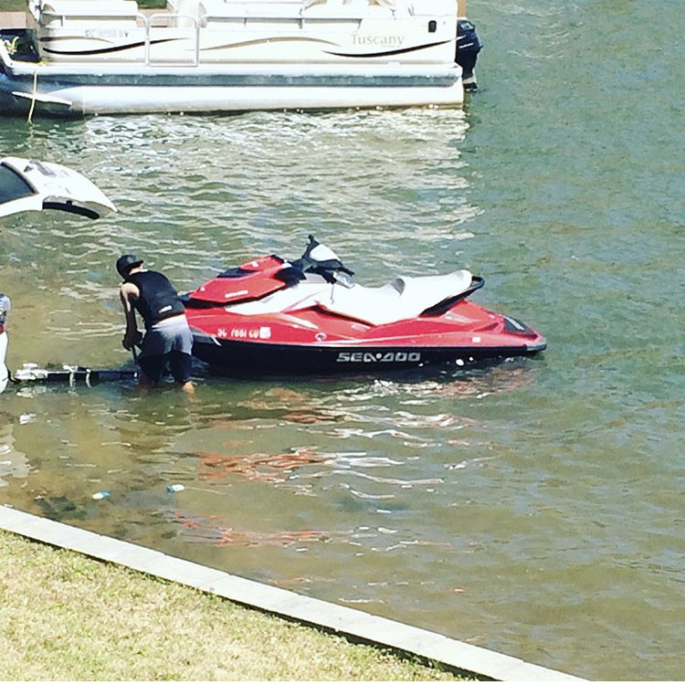
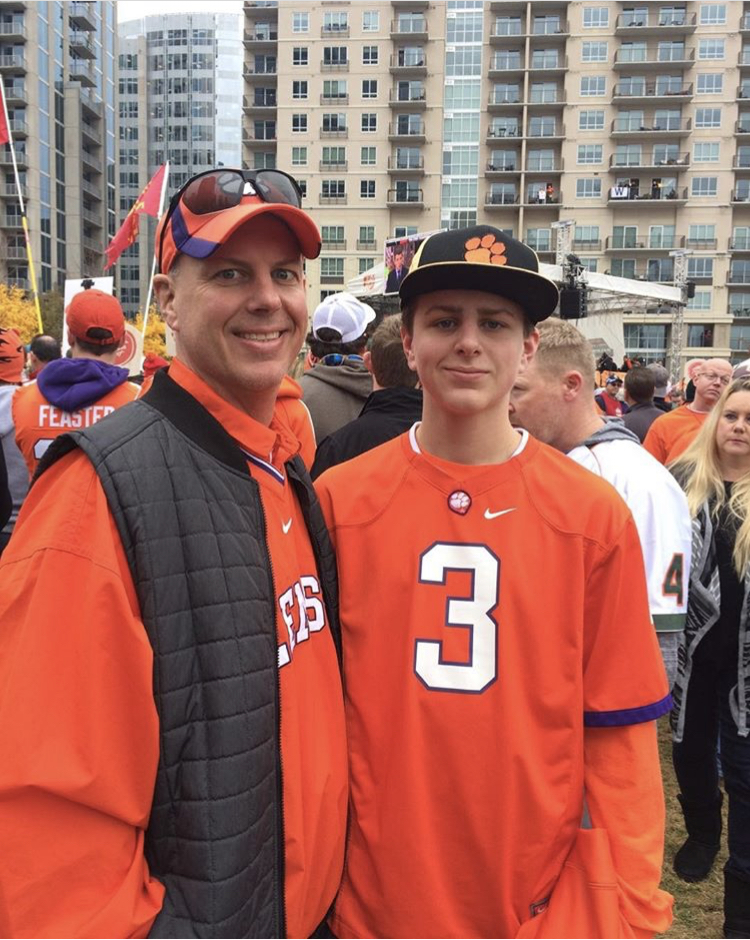

The One and Only Drew McCarthy
Student Athlete, Water Sports, My Family, and My Hobbies
Baseball

I am a baseball player, and currently play for my High School. I play many positions, but I mostly play in the outfield and pitch. Last year, I played for the Junior Varsity for my High School, and this year I hope to make Varsity. Although, I pratice a bunch, I still have to put school first, and focus on my acedemics. This can be difficult, but I make sure I perform my best in the classroom and on the field.

Water Sports

Growing up on the lake has always made me a huge fan of Water Sports. Ever since I was a little kid, I had always wanted to be good at water sports like my dad's friends. When I was five years old, I went water skiing for the first time. A couple years later, I learned how to wakeboard. Riding Jet-Skis has always been one of my favorite water sports. When I turned twelve, I got my license so I could drive it whenever I wanted. Lastly, another Wtaer Sport I like to do is Cliff Diving. The first time I went Cliff Diving was in Jamiaca, and I have loved doing it ever since.
My Family
In my family, I am an only child. Sometimes this can be boring, but I also have a great time hanging out with my parents. Usually, we see my cousins and Grandparents every month. Although they live in Columbia and Atlanta, we always try to see them whenever we can, and it is always a great time. We all love to watch some football, and hang out with each other.

My Hobbies

Outside of when I am praticing baseball and working on my school work, there are many things I like to do. One of my hobbies is to play video games. My friends and I love to play Xbox, whether we are playing against each other in Madden, or squading up on Rainbow Six Siege. I also like to play some sports, just for fun. My dad and I like to go golfing once or twice a month, because it is a sport we both enjoy to watch and play. I also like to shoot basketball, sometimes it is me just shooting hoops in the driveway, or going to the basketball gym with my friends. Other times, we like to just go and hang out.